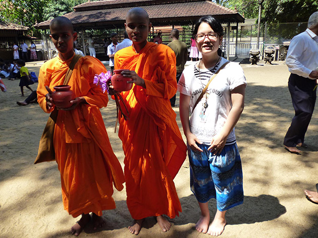
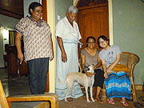
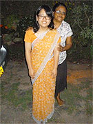
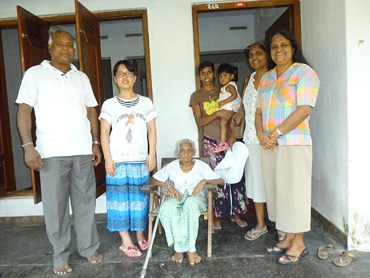
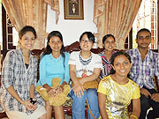
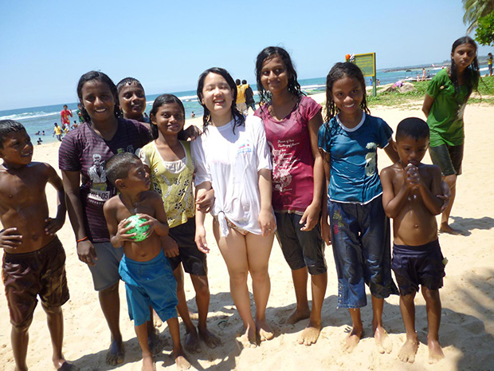
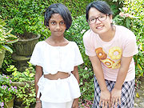

 ご僧侶とパチリ☆ |
「ホームステイをしながらも英語の勉強やボランティアに参加できること、そして物価が安いので、参加を決めました。 英語のレッスンは、先生が英語のレベルアップの手助けをしてくれました。 |
ホストファミリーとの生活は、とても楽しかったです。 一緒に買い物をしたり、何でも教えてもらったり、逆に日本のことを伝えたりと、いつも一緒にいて何かしてました。 ファミリーのおかげで素敵な思い出が沢山できました。 |
 ホストファミリーと♪ |
 サリーを着せてもらいました！ |
私のホームステイは、２週間でしたが、もっと長く居たくなりました。 南国の変わった物や主食のカレーを味わって、イモリやクモと共同生活して（笑）、ファミリーに色々な場所に連れて行ってもらって、スリランカの良さを知ることができました。 |
低開発村視察に行きましたが、『低開発』なんてとんでもないと思いました。 日本では見られない建て物（小屋？）や現地の人達の農作業の様子を見れて面白かったです。 |
 |
 |
スリランカに行く前は『生活が不便になるかも』と思っていました。 でも全然困りませんでした。 日本のように電化製品を完璧に揃えてるとか、水が奇麗とかではないけれど、時間をかけたり水であれば買ったりといくらでも解決できました。 また、予想以上に仏教への信仰心がみんな強くて驚きました。 |
また、是非スリランカへ行きたいです。 留学プログラムも利用できたらしたいです。 |
 |
もっと、長期間のホームステイにすれば良かったと思いました。 虫さされたあとの薬をもっと沢山持って行けば良かったです。 |
以前、ロシアに１週間行ったことがありましたが、ロシアや日本と比べるとスリランカはとにかく生活の中心に『自然』があると思いました。 また、シャイではあるけれども笑顔で話しかけてくれたり、日本語を勉強している人が多かったり、親日的ですごく嬉しかったです。 その他では、交通事情が日本と全然違うので、車に乗ったり道路を歩いたりする度に危険だと思いました（笑）。 |
ボランティアで日本語教師を少ししてきました。 小さくても、英語が喋れるので驚きました。 １９歳の私でも何とかボランティアが務まったので、他の人にもやって欲しいです。 |
Beインターナショナルも現地受入団体もどちらも丁寧な対応をしてくれました。 スリランカは、本当に良かったです。 |
 |